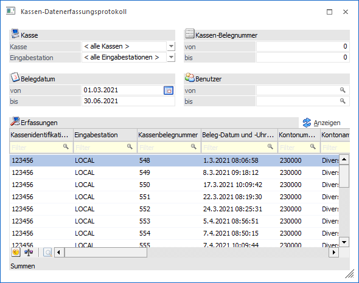
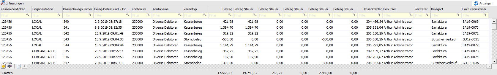
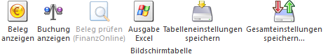
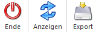

Das Datenerfassungsprotokoll (DEP) hat in der Verordnung des Bundesministeriums für Finanzen einen verbindlichen Aufbau und muss ab 1.1.2016 für alle Bargeschäfte geführt werden.
Das Datenerfassungsprotokoll kann über den Menüpunkt…
1 WinLine FAKT
1 Auswertungen
1 Kassen-Datenerfassungsprotokoll
… aufgerufen werden und beinhaltet alle Barrechnungen, welche mit einer Barbelegart erfasst wurden.

Es stehen folgende Selektionsmöglichkeiten zur Verfügung:
Ø Kasse
Hier kann entschieden werden, welche Kasse (derzeit auf eine Kasse limitiert) ausgewertet werden soll. Standardmäßig wird das Eingabefeld mit < alle Kassen > vorbelegt.
Ø Eingabestation
Hier kann aus der Auswahllistbox gewählt werden, für welche Eingabestation die Auswertung durchgeführt werden soll. Beim Öffnen wird der Eintrag < alle Eingabestationen > vorbelegt.
Ø Belegdatum
In diesen Feldern kann eine Datumsbegrenzung eingestellt werden, welche bei der Ausgabe berücksichtigt wird. Beim Öffnen wird diese Auswertung mit dem aktuellen Tagesdatum lt. Systemdatum vorbelegt.
Ø Kassen-Belegnummer
Hier können die Belegnummer eingetragen werden, welche angezeigt werden sollen. Beim Vorschlag von 0 bis 0 werden alle Belege angezeigt.
Ø Benutzer
Mit dieser Selektion kann die Ausgabe des Datenerfassungsprotokolls auf einen bestimmten oder mehrere Benutzer eingeschränkt werden.
Ø Anzeigen
Durch Anklicken des Anzeigen-Buttons (siehe auch Ribbon) wird nachfolgende Tabelle gemäß den Einstellungen gefüllt.
Tabelle "Erfassungen"

In der Tabelle werden folgende Informationen dargestellt:
Ø Kassenidentifikationsnummer
Anzeige der Eindeutigen Nummer, derzeit wird immer nur eine angezeigt.
Ø Eingabestation
Anzeige der Workstation, auf der der Beleg erfasst wurde.
Ø Kassenbelegnummer
Fortlaufende Nummer des DEP, kann nicht beeinflusst werden und hängt nicht von der tatsächlichen Belegnummer des Kassenbons ab.
Ø Beleg-Datum / Uhrzeit
Datum und Uhrzeit, wann der Beleg gedruckt wurde.
Ø Kontonummer
Kontonummer, für die der Beleg gedruckt wurde.
Ø Kontoname
Name des Kunden, für den der Beleg erstellt wurde.
Ø Zeilentyp
Hier wird angezeigt, um welche Art von Erfassungszeile es sich handelt. Dabei können folgende Typen unterschieden werden:
ü Kassenbeleg => Normaler Kassenbeleg
ü Stornobeleg => Stornierter Kassenbeleg
ü Abschlussbeleg => Wird derzeit noch nicht unterstützt
ü Trainingsbeleg => Wird derzeit noch nicht unterstützt
Ø Betrag
Brutto-Betrag des Kassenbelegs.
Ø Betrag Steuersatz (Normal, Ermässigt 1, Ermässigt 2, Null, Besonders)
In diesen Spalten wird der Bruttobetrag der einzelnen Steuersätze ausgewiesen. In welche Spalte die jeweiligen Umsätze gerechnet werden sollen, wird über die Option "Steuersatz (Kasse)" in der Steuerzeile eingestellt.
Ø Umsatzzähler
In diesem Feld wird der laufende Umsatz, der in weiterer Folge auch für die Ermittlung des Codes, der am Kassenbeleg angedruckt werden muss (ab 1.1.2017), benötigt wird, angezeigt. Dabei werden auch Stornobelege entsprechend berücksichtigt.
Ø Benutzer
Anzeige des Benutzers, der den Eintrag erzeugt hat.
Ø Vertreter
Anzeige des Vertreters (sofern im Konto bzw. bei der Erfassung ein Vertreter eingetragen wurde).
Ø Belegart
Hier wird die Belegart angezeigt, mit der der Beleg erstellt wurde.
Ø Fakturennummer
Anzeige der Rechnungsnummer, welche beim Druck des Belegs lt. Belegart vergeben wurde.
Hinweis
Auch wenn ein Beleg mit mehreren unterschiedlichen Zahlungsarten beglichen wurde, wird pro Beleg immer nur eine Zahlungsart angezeigt.
Tabellenbuttons

Ø Beleg anzeigen
Mit diesem Button kann der Beleg der aktuell selektierten Erfassungszeile angezeigt werden.
Ø Buchung anzeigen
Durch Anwahl dieses Buttons wird ein Fenster geöffnet, in welchem die zugehörige Buchung der selektierten Zeile angezeigt wird (nähere Informationen entnehmen Sie bitte dem Kapitel Datenerfassungsprotokoll - Buchungsinfo).
Ø Ausgabe Excel
Durch Anwahl des Buttons "Ausgabe Excel" wird der Inhalt der Tabelle nach Microsoft Excel übergeben.
Ø Tabelleneinstellungen speichern
Die Spalten einer Tabelle können grundsätzlich an beliebige Positionen verschoben, bzw. in der Breite entsprechend angepasst werden. Durch Anwahl des Buttons "Tabelleneinstellungen speichern" werden die Einstellungen benutzerspezifisch gespeichert und bei dem nächsten Aufruf des Programmpunktes wieder vorgeschlagen.
Ø Gesamteinstellungen speichern…
Im Gegensatz zu "Tabelleneinstellungen speichern" können mit "Gesamteinstellungen speichern" mehrere Tabellenaufbauten gespeichert und nach Wunsch geladen werden. Zusätzlich werden Sonderfunktionen der Tabelle (z.B. "Spalte gruppieren") ebenfalls bei der Speicherung bedacht.
Buttons

Ø Ende
Durch Drücken des Buttons "Ende" bzw. der Taste ESC wird das Fenster geschlossen.
Ø Anzeigen
Mit Hilfe des Buttons "Anzeigen" wird der Inhalt der Tabelle aktualisiert.
Ø Export
Mittels Button "Export" kann das Datenerfassungsprotokoll als txt-Datei oder im RKSV-DEP-Format exportiert werden (nähere Informationen entnehmen Sie bitte dem Kapitel Export Kassen-Datenerfassungsprotokoll).